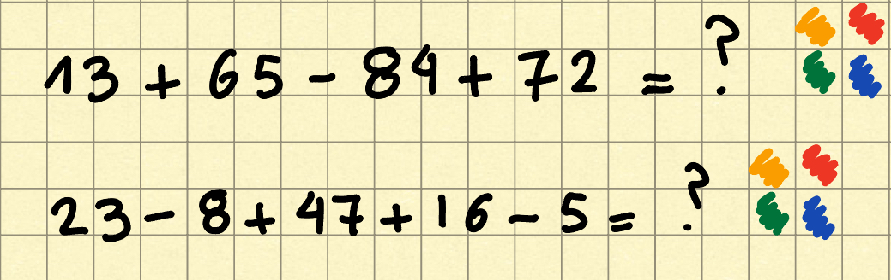
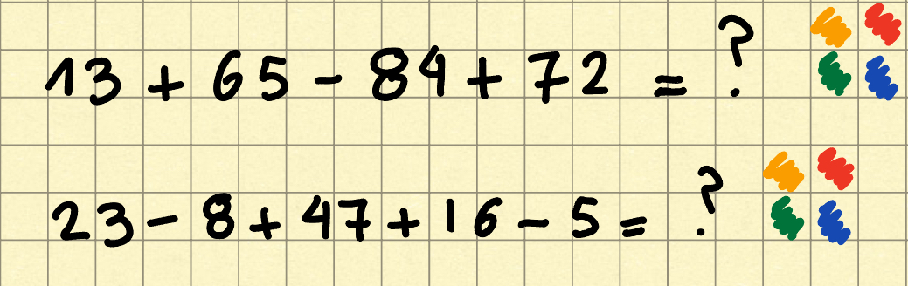
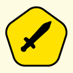
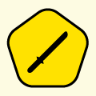

ISTRUZIONI
In questa pagina troverete 5 storie differenti divise nei 16 quadrati, il vostro scopo è quello di
ricostruire le singole storie per accedere alle liste, ogni storia da accesso ad una lista.
HOW TO
Per mostrare le storie è necessario cliccare sul quadrato, un secondo click farà scomparire la
storia. Una volta che sono stati mostrati tutti i pezzi di una storia apparirà un bottone nella
sezione sottostante ai quadrati che potra essere cliccato per accedere ad una lista.
IMPORTANTE: ogni lista ha una parola chiave che permette l'accesso diretto dalla pagina liste inserendo la parola chiave.
IMPORTANTE: ogni lista ha una parola chiave che permette l'accesso diretto dalla pagina liste inserendo la parola chiave.
INFORMAZIONI SULLE STORIE
Le storie sono di lunghezza irregolare. Ci sono 2 storie di lunghezza 4, 2 di lunghezza 3 e 1 di
lunghezza 2.
EXTRA
Sono presenti ulteriori liste, per saper la loro parola dovete risolvere questo enigma:


HIROSHI TANAKA
TAKESHI YAMAMOTO
SATOSHI NAKAMURA
AKIRA SATO
KENJI SUZUKI

MASARU WATANABE

KAZUKI TAKAHASHI
SHINJI KOBAYASHI

YOSHIO ISHIKAWA
HARUTO YAMAGUCHI
MAKOTO NAKAJIMA
TATSUYA MORI
RYOTA KATO
DAISUKE
YAMATA
AKIHIRO FUJIMOTO
NAOK INOUE
Nel regno del tactix, tra mosse e strategie,
Un bottone nascosto, tra pezzi e magie.
Racconta storie antiche, di combattenti e di re,
E a te, raccoglitore di storie, si rivolge con piacere.
Sospeso tra pezzi, in attesa e in quiete,
Il bottone magico, un segreto che sa di sete.
Con un clic misterioso, svela il suo potere,
E un mondo di avventure si apre davanti a te, sì, per vincere.
Ti invita a esplorare, tra le pieghe del tempo,
Con storie da raccogliere, in ogni luogo e momento.
Ogni clic è una mossa, ogni parola un enigma,
E tu, raccoglitore di storie, sei il vero protagonista di questa dramma.
Preme il bottone, immergiti nel mistero,
E scopri il tesoro nascosto, che aspetta solo te, vero esploratore.
Che il bottone magico ti guidi, in un viaggio senza fine,
Dove ogni storia raccolta, sarà un gioiello nel tuo scrigno, sì, un confine.
Un bottone nascosto, tra pezzi e magie.
Racconta storie antiche, di combattenti e di re,
E a te, raccoglitore di storie, si rivolge con piacere.
Sospeso tra pezzi, in attesa e in quiete,
Il bottone magico, un segreto che sa di sete.
Con un clic misterioso, svela il suo potere,
E un mondo di avventure si apre davanti a te, sì, per vincere.
Ti invita a esplorare, tra le pieghe del tempo,
Con storie da raccogliere, in ogni luogo e momento.
Ogni clic è una mossa, ogni parola un enigma,
E tu, raccoglitore di storie, sei il vero protagonista di questa dramma.
Preme il bottone, immergiti nel mistero,
E scopri il tesoro nascosto, che aspetta solo te, vero esploratore.
Che il bottone magico ti guidi, in un viaggio senza fine,
Dove ogni storia raccolta, sarà un gioiello nel tuo scrigno, sì, un confine.